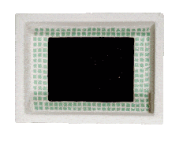
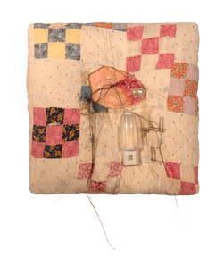
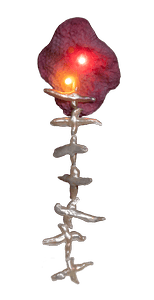

SPIT BRIMMING WITH FUTURES
Film stills
Installation Images



Installation Video
Book


![SPIT BRIMMING WITH FUTURES expresses an urgent need to imagine stories about transgender, autistic people that affirm our agency and autonomy amidst a political climate that weaponizes neurodivergence to delegitimize trans experiences. The American political right’s vilification of transgender people is used to uphold structures of white supremacy and heteropatriarchy that become destabilized when rigid binary gender categories are challenged. The political right has a vested interest in keeping trans people out of public view, thus weaponizing the internet’s capacity for generating trans support networks and resources, and positing trans identity as a “social contagion” that is transmitted online. Contemporary photography has a tendency towards prioritizing visibility as an outcome of trans representation, when in reality these visual representations and their dissemination online can result in increased violence against trans people. I use ASMR (Autonomous Sensory Meridian Response) to produce a non-visual representation of trans embodiment. ASMR refers to a tingling sensation that begins in the scalp and emanates down the neck and spine. The sensation is triggered by sounds, usually whispering, tapping, or other soft tones. ASMR video content on social media platforms is an intimate technology; often involving personal attention and care, it fosters a connection between listener and creator that extends beyond the digital interface to produce bodily sensations. Soundscapes ground the installation’s trans narratives in physical sensations and audio-spatial presence, so that the spoken word resonates in the listener’s body. This produces a representation of transness that is not grounded in visibility, rather it produces a haunting, a force that can be felt even without being seen. The audio you hear in this exhibition references trans desire, intimacy, joy, and possibilities for alternate worlding and creating portals. Rather than act as visual representation, trans intimacy is rendered as an invisible, yet tangible feeling, asking, how will we carry each other in the dark? SPIT BRIMMING WITH FUTURES imagines what a neurodivergent, queer future could look like– where the categories of gender begin to dissolve, and society, rather than neurodivergent people, is measured by its functionality in embracing non-dominant forms of communication, embodiment, and expression.](images/thesis/book/book_01.jpg)
![t4t: looking to slip into an interdimensional fissure. i have memories of the future. i know you’re out there somewhere, remembering it too. we can film each other in the bathroom mirror of america’s best value inn, chewing soft ice from the courtesy cups. i can film you opening the motel blinds and film you closing the motel blinds. the camera turns the bed into a horizon. we can leave it recording the TV static turning into a go pro car crash turning into dateline turning back into TV static and the TV becomes a noise machine becomes a campfire and you’re wearing my sweatshirt and filming the fire throwing our shadows all over each other. shaking, shimmering. you can film me turning to face a massive pink thundercell at the moment it ruptures and ruptures over and over again soaking everything and i can film you running your fingers through your hair, sopping wet. by every creek in arkansas there is a church parking lot, the concrete seams teeming with meadowsweet. we take our wet shoes off and i squeeze the creek water from your hair and you sit on the red cooler and lift your neck up to the pink-dusted sky. and the camera zooms in on your lips parting. it looks like rain. and i can film myself turning the box fan on and listen to your soft sighs carry me and the sounds would bleed together into static hymns and your hair would cling to my cheek and by morning it would be spit soaked and the room would be drenched in that almost-light where our bodies become unrecognizable become three i believe in you bloody mary in the mirror of the bathroom in america’s best value inn. and we suture the footage together into an endless loop and you’re seeing it too right? this is our proof. in every possible dimension we are slipping towards each other, slipping into ourselves, creating fissures in reality every time we make contact. how many fissures will it take until it all collapses, leaking and lush with desire?](images/thesis/book/book_02.jpg)
![Before craiglist personals became defunct, the term t4t was used to refer to a transgender person looking for another transgender person. Craigslist personals was the first place I encountered other transgender people as a teenager. Living in a small town, the t4t posts on my local craigslist board often didn't just feel like they were expressing a desire to hookup, but attempting to conjure someone into being. Almost like shouting into a cavern and waiting for an echo to shout back, some kind of sign that you are not alone here. At the time I first viewed these posts, they were the only narratives about transgender people I encountered that didn’t end in death or humiliation, when the possibility of survival felt like an absolute fantasy.](images/thesis/book/book_03.jpg)
![The movie Carrie (1976) portrays Carrie as an autistic coded character, who is taunted by peers for her inability to adequately adhere to expectations of femininity and sexuality. Carrie possesses telekinetic powers that are typically triggered by intense, overstimulating situations where she is unable to communicate verbally. Carrie is drenched in pig blood. I’m being drenched in fluid that comes out of my own mouth. Carrie’s telekinesis renders her body a weapon. My body is weaponized and pathologized as an autistic person. The identities that congeal inside of my body– trans and autistic– are being weaponized by the political right in order to delegitimize one another, to pass legislation that perpetuates america’s continued legacy of eugenics. I want everything to collapse, to catch fire, I want agency, I want trans life expectancy, I want to be the weapon. What happens when I am tired of surviving and I’d rather start living? My very existence is made into a weapon. A hammer, a claw machine, a lesbian, a trans man, illegible, ancient corpse under so much pressure it crystallizes, a crack in the foundation. The house is folding in half. I’m in public and I’m a weapon, and now it’s time– time to let joy make my body writhe, for the whole goddamn world to function differently instead.](images/thesis/book/book_04.jpg)
![missed connection: in the next life i hope we’re the two mourning doves who sing in the fire escape sunlight spilled onto the floor again and flooded the whole apartment with gold. it’s making me sick. when the lake turns itself over, there are a few days when the light hits a certain spot on the wall, shivers into dusk like a shaky exhale. you turned me into a time traveler, once again i am too shy to look at you. you were afraid of my body growing into something you couldn’t love. i want to ask if it was hard to leave, but i don’t want to know the answer. we could sink softly into each other as we grow old and luminous. let time do what it does to our temporary bodies. pull my flesh apart and it’s just me, wanting to be loved without begging to be seen. when my body becomes a burned bridge or a trapdoor, i remember that it is also a portal. i will make it across and through and maybe, i will see you on the other side. inside me, miserable and thriving.](images/thesis/book/book_06.jpg)